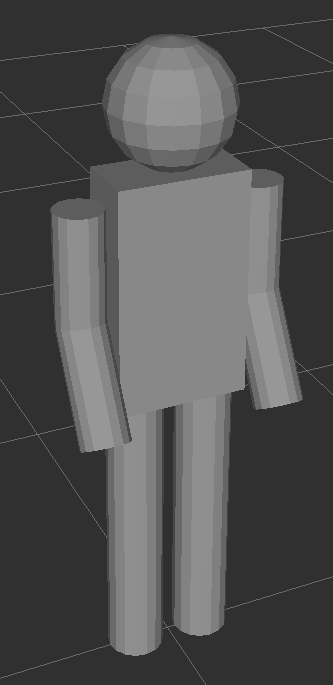
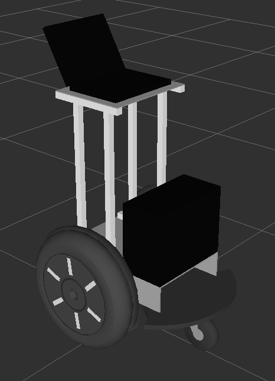

Please read the instructions thoroughly before proceeding.
Experiment Goal
In these experiments, you'll be controlling a simulated person to find a
red ball located somewhere on the floor. The floor is approximately 50m by 50m in size. Images of the simulated person and the ball are below.

The ball you are trying to locate may be in an open area where it is
easy to see, or it might be inside a room and not easily
visible from the outside through the doorway. Once you find
the ball, run into it to proceed to the next experiment.
Your goal will be to find the ball as quickly as possible. At the end of
each experiment, you will receive a score based on how fast you were
able to locate the ball. Your score for that experiment will be added to
your total.
We'll begin with a couple of tutorials to get you started. After that
there will be 6 experiments.
Robots
There will be some robots in the environment that will try and help you
reach the destination. These robots are pictured below:

The robots will always try and do their best to direct you along the
correct path to the goal. However, there might not be enough robots
available in an experiment to make the path to the goal easy to follow.
When you approach a robot, an arrow will pop up pointing you in the
right direction. If an arrow does not pop up, it means the robot is
there performing some other task, and you should ignore that robot.
Using the mouse to look
You can use the mouse to look around if your browser supports it. Hit the
"Use Mouse!" button when you enter the experiment.
It will take you between 15-30 minutes to complete the entire set of
experiments, so make sure you have enough time to proceed.